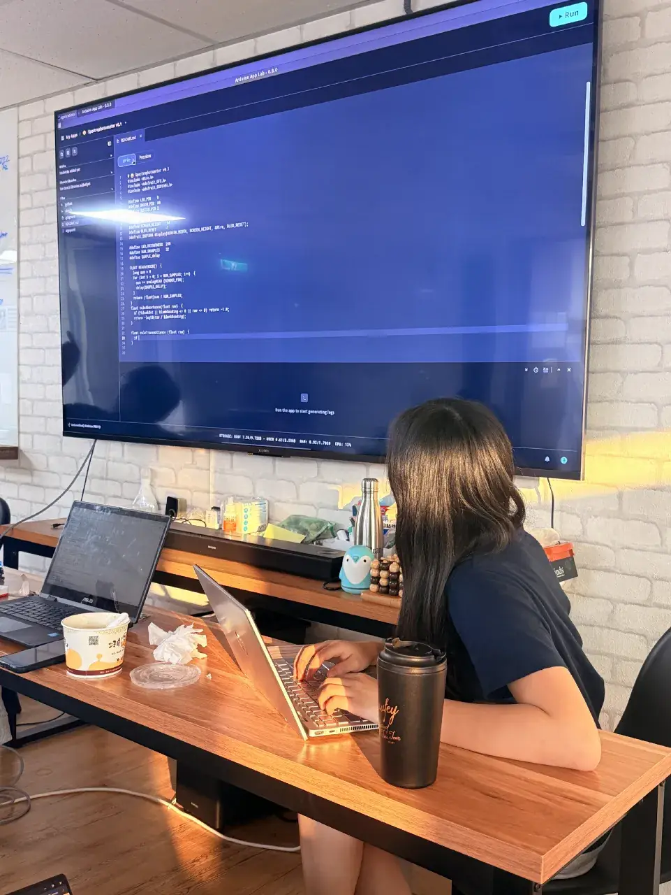

What the model decides
ReLEAF's reactor makes a crop protectant only while its green lamp is on, so something has to decide when to turn the lamp on, how bright, and how much to make. For most of the year we treated that as a question about volume: how many litres does one hectare need. The answer kept moving, because it rests on a dose nobody has minimised and a canopy correction nobody has measured.
Time is the better question, because three independent numbers have to fit inside one window. A weather forecast sees about three days ahead. The reactor takes days to fill. The plant needs the protectant at one particular moment relative to the stress, and which moment is still contested at the bench. If those three do not overlap, no dose is the right dose.
They do not overlap. One hectare's application takes 5.7 days on ten 20-litre units against a three-day forecast, so 2.7 days of production have to happen before any forecast exists to justify them. The reactor cannot chase the weather. It brews through the season and the forecast decides when to spend the stock, which makes storage stability a load-bearing number that nobody has measured.

What the model takes in
Eight of these are ours and four are not, and the page marks which is which in the last column of each table because the provenance of a number decides how hard the conclusion leaning on it can push. One input is neither measured nor cited: the canopy correction is a model, and the ledger in Section 3 shows exactly where it enters.
From the record
| Input | Source | What it sets | Provenance |
|---|---|---|---|
| County rice yields, every season since 2001 | Agriculture and Food Agency (農糧署) | Fits the stress index and scores it | ours |
| Daily weather, 2001 to 2025 | ERA5 reanalysis | The eighteen candidate stress terms | external |
| Live weather | Central Weather Administration (中央氣象署) | The three-day release decision | external |
| Farm-gate paddy price, NT$25.7/kg | Official 2026 price | Turns an index level into New Taiwan dollars | external |
| Unit cost, NT$30,000 per 20-litre unit | Geospatial Analysis | Capital in the ledger | from GIS |
From our own bench
| Input | Source | What it sets | Provenance |
|---|---|---|---|
| Secreted activity, 7.25 mU mL⁻¹ | Our DNPH assay, 7 October, n = 1 | Enzyme per litre of culture | ours, below quantitation |
| Light response of two LPA wells | Our light plate, DNPH read at 28 h, n = 1 each | Checks the lamp curve; sets nothing on its own | ours |
| Applied volume, 1.67 mL per three sprays | Experiment #9, phase 3 protocol | The dose, with the plate area | ours |
| Plate area, 78.5 cm² | 10 cm round plate, from the protocol | The dose, with the volume | ours |
| Timing arms, before / with / after | Three plant runs, two of them disagreeing | Where the protectant has to arrive | ours, contested |
| CcaSR transfer function | Castillo-Hair et al. 2019, B. subtilis | Demand to lamp intensity | literature |
| ACC deaminase kinetics | P. putida UW4 | Activity to protein mass | literature |
| Rice canopy correction, ×2.44 | Leaf area index 4.5 against 0.115 on a plate | Plate rate to field rate | modelled, not measured |
Results
The stress index, and the blind test it is in
Most crop stress indices weight temperature, water and light by expert judgement. We let Taiwan's harvests choose instead. Taiwan grows two rice crops a year in the same field: the first (一期) is transplanted around February and harvested in June, the second (二期) transplanted in July and harvested in November. They meet different weather, so they are fitted separately and an index value is never quoted without its crop.
A season whose yield fell below its county trend was a stressed season. For each crop we fitted all 215 − 1 = 32,767 combinations of fifteen candidate stresses and scored every one on years it had not seen. The second crop pays for wind, light and badly timed water; heat earns nothing once those are in, which is worth saying plainly because the wet lab has a heat programme this index does not support.


Against the no-weather trend, the model carries 32% less county error in the second crop. The first crop is the weaker of the two fits, and it is the one now being tested blind: the 2026 first-crop forecast was frozen on 26 September, before any county published, and four of sixteen counties are in at 7.9% county error against the trend's 8.8%. Four is too few to call. Hualien and Pingtung beat their index badly, Taitung undershot it, and only Taichung landed where history said. The second crop is not harvested until November, so the fit we trust most is the one no blind test has reached.

The lamp curve, checked on our own hardware
The reactor holds B. subtilis WB800 carrying CcaSR. Green light at 535 nm activates CcaS, CcaR~P drives PcpcG2, and acdS behind a secretion signal puts ACC deaminase in the supernatant. Castillo-Hair et al. fitted the steady-state response in B. subtilis to a Hill function with K½ = 4.66 µmol m⁻² s⁻¹ and n = 1.88; inverting it turns a demand f into a lamp intensity, I = K½(f/(1−f))1/n. The same system in E. coli gives K½ = 1.075, so the host matters.

Two wells were induced at different green intensities and assayed by DNPH. Per hour of induction the dimmer well gave 0.128 of the bright one; the published curve, with nothing fitted by us, predicts 0.144 if that well sat at 220 lux. That is the only place in this model where a prediction taken from a paper meets a measurement on our own build, and the two agree to within 11%. It is two wells read once, and they differed in duration as well as intensity, so it is a check and not a calibration. It also depends on the setting: at 510 lux the curve predicts 0.454 and we measured a third of that, which would say CcaSR is less sensitive in our hands than in the paper's.
The same two numbers cannot size the reactor. That assay ran its reaction for 28 hours, and averaged over it the bright well is 0.33 mU mL⁻¹, 22 times below the 7.25 mU mL⁻¹ an earlier supernatant assay reported over 30 minutes. Substrate is not the explanation, since only 1.3% of the 43 mM ACC was consumed. Either this culture carries far less enzyme, or the enzyme stopped early and 28 hours is the flat end of a curve that finished in the first hour or two. A single decay with a one-hour time constant passes through both points and would put the initial rate at 9.2 mU mL⁻¹, which is the same order as the earlier assay, so the two may not disagree at all. The triplicate run on 18 October settles it by reading the same plate at 0.5, 1, 2, 4 and 28 hours instead of only at the end, and returns the decay at bench temperature as well, which is the storage number Section 1 needs.
When the protectant has to arrive
Since July the plant team has run the same design: the protectant goes on one day before the salt, with it, or one day after. That design exists because the dry lab asked whether a farm needs a prediction at all. If pre-treatment wins, ReLEAF needs a forecast; if co-treatment wins, it needs a full tank and a fast response, which is a different machine. Three runs have reported and they disagree.

On agar at 75 mM, scored as fresh weight, pre-treatment wins. In soil at 300 mM, scored as chlorophyll per gram, co-treatment wins and pre-treatment does nothing; a commercial peptide at 100 mM also put co-treatment first. The soil run cannot settle it. Its five tubes held 22 to 199 mg of tissue, each weighed once, and chlorophyll per gram tracks that weight at r = −0.85; the group that looks rescued is the smallest of the five, and read as total chlorophyll the same tubes put co-treatment last.
Earlier drafts of this page multiplied every economic figure by an efficacy of 0.58, carried from Arabidopsis fresh weight on agar to rice grain yield. That coefficient is withdrawn. The agar run reaches the ceiling of the calculation it came from and the soil run cannot be read, so neither bounds it, and the payback below is drawn against efficacy on an axis rather than at a value we cannot defend.
From one plate to one hectare, and on to capital
Everything above arrives here as one chain. A recorded volume over a known plate area is a rate, and a rate scales to a hectare with no modelling in between; earlier drafts used 100 cm² because the plate size had never been written down, and the protocol gives 10 cm round plates, so the rate is 27% higher than we were carrying. From there the titre turns litres into enzyme, the weather record turns one application into a season, and the reactor's own throughput turns a season into vessels and money.
Two rows deserve their caveat in the same breath as the number. The canopy correction is modelled from a leaf area index of 4.5 against 0.115 on a seedling plate and spans 1.68 to 3.52 on its own, so the 5,188 L is a working scenario and not a validated rice dose. And the experiment that produced 1.67 mL changed salt level and timing, never the amount, so 2,126 L/ha is a dose that worked rather than the smallest that works; one plate with neat, 1:3, 1:10 and 1:30 arms would find the minimum, and every row below it would move.
What efficacy the payback requires, and why the fleet is idle
With efficacy unbounded the useful question is not what the payback is but what efficacy the payback requires. On ordinary 雲林 paddy the weather-attributable loss this enzyme could address is NT$4,429 per hectare per crop, and the first crop never crosses the release threshold in 25 years, so one crop a year qualifies. Against ten units at NT$30,000 the ordinary-paddy curve never reaches five years anywhere on the axis; it would need an efficacy of 12.8, which is not a hard target but an impossible one. Salt-affected coastal land is a hundredfold larger problem per hectare and needs 0.13, low enough that we would expect to clear it but cannot yet show that we do.
The other half of the problem is that the machine is idle. Two crops a year and only the second ever fires; within it, 17 of 25 seasons never cross the threshold. A firing season needs 9 passes at 5.4 days each, which is 49 reactor-days inside a crop of about 120 days, so a ten-unit fleet tops out at 2.5 hectares and spends 96% of the calendar doing nothing. The 64.7 years is as much a statement about an asset that sits still as about the enzyme: sharing one fleet across the hectares it can actually serve brings ordinary paddy to 26 years, still not a business, and the coast to 0.96, where the binding constraint stops being money and becomes throughput.
What this hands to Geospatial Analysis and the business plan
The business team asked for three numbers in a row: how much ACC deaminase a hectare of ordinary rice farmland needs, how far that is from what the current reactor can make, and what closing the gap costs. The ledger in M4 was built to end on exactly those, and all three carry the canopy correction, so they are scenario figures rather than quotes.
| The question | The answer this model gives | Where in the model |
|---|---|---|
| How much ACC deaminase does one hectare need? | 37.6 kU per application and 339 kU in a season that fires, which at our secreted protein concentration is about 10 g and 92 g of enzyme | Ledger rows 7 and 10 |
| How far is that from what we can make now? | One hectare needs 81 L of vessel running all season. Our current spec is 10 × 20 L = 200 L, which covers 2.5 ha — about one Taiwanese farm. A 100-hectare association needs 8,106 L, a 41× scale-up | Ledger row 12, and M5 |
| What does that cost? | NT$121,600 of capital per hectare at NT$30,000 per 20-litre unit, before any refill, service or labour. For 100 hectares, NT$12,160,000 | Ledger footer |
Geospatial Analysis answers a question that looks the same and is not. It derives units per hectare from soil, because how far and how long the protectant stays where it is put depends on soil class; this page derives units per hectare from reactor throughput, because a fleet that cannot brew fast enough is short whatever the soil does. A deployment has to satisfy both and the binding one will differ by township, so the two densities need reconciling before either is quoted as the number of machines a field needs.
Where the two pages already agree is ownership, and they reached it from opposite directions. Geospatial Analysis puts capital per hectare at or above a full year of gross paddy revenue in every soil class and notes that 99% of Taiwanese farmers work under two hectares, so individual ownership is arithmetically out of reach. This page gets there from the duty cycle: a ten-unit fleet brews on 4.3% of the calendar and covers 2.5 hectares, so a machine bought by one farm is idle almost all of its life. A shared asset held by a farmers' association is not a preference in either account; it is the only structure the arithmetic allows.
Two costs this page does not carry are the ones a farmer actually pays. Refill cartridge cost and hardware service life turn capital per hectare into cost per hectare per season, and both are still waiting on field data. The straw-return mechanism in the business plan is the lever on the first of them.
Current limits
Six things this model cannot yet do. Efficacy is unbounded: no plant run of ours constrains how much of a salinity loss ACC deaminase takes back, so every figure in New Taiwan dollars is drawn against efficacy rather than at a value. The dose is one that worked, not the smallest that works, and no dilution series has been run. The canopy correction is modelled and spans 1.68 to 3.52, and every row of the ledger below it inherits that. The titre rests on one well below the assay's quantitation limit, and the 28-hour endpoint that would check it cannot be told from a stalled reaction. Storage stability is unmeasured, which matters because the fleet has to bank stock to be useful at all. The release rule is counted from waterlogging while the payback is priced on salinity; making them agree means rebuilding the rule around salt-sensitive growth stages, which would need roughly fifteen applications in a 30-day window instead of nine, or 81 reactor-days inside 30, which the current fleet could not serve for even one hectare without banking well in advance.
References
- Agriculture and Food Agency, Ministry of Agriculture (農糧署). County rice yields for every season since 2001; the record the stress index is fitted and tested against.
- ERA5 daily reanalysis for the historical fit, and Central Weather Administration (中央氣象署) station data and forecasts for live use.
- Castillo-Hair, S.M., Baerman, E.A., Fujita, M., Igoshin, O.A., Tabor, J.J. (2019) Optogenetic control of Bacillus subtilis gene expression. Nature Communications 10:3099, for K½ = 4.66 ± 0.63, n = 1.88 ± 0.16 and the response kinetics.
- ACC deaminase kinetics from Pseudomonas putida UW4: Km 3.4 mM, kcat 146 min⁻¹, homotetramer of about 144 kDa.
- Our wet lab: DNPH activity assay on culture supernatant, 7 October 2026, 30 min reaction, n = 1; and the Level 2 light-plate wells, DNPH read at 28 h, n = 1 each.
- Our wet lab: Arabidopsis salinity experiment #9, phase 3 protocol — three sprays from a sterilised nozzle at 10 cm, 1.67 mL per three sprays, onto 10 cm round horizontal plates.
- Our wet lab: chlorophyll recomputed from raw absorbances, 10 October 2026, 80% acetone, Arnon (1949) coefficients.
- Rice leaf area index 4.5 at panicle initiation against 0.115 on a seedling plate, with the spray-capture fraction at each, behind the modelled ×2.44.
- Geospatial Analysis, for unit cost, deployment density by soil class and the salt-affected profit figures; Entrepreneurship, for the ownership model and the straw-return mechanism.